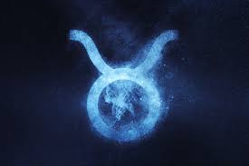
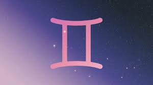
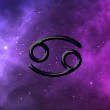
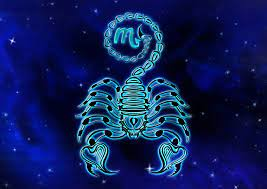
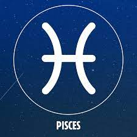

DAILY HORORSCOPE
Astrology is an extremely complex study, the most fundamental principle of astrology centers on the 12 familiar star signs of the zodiac. Over the centuries, each sign has developed its own associations — including myths, animals, and colors — and its own characteristics. Every sign is illuminated by its own point of view, complete with powerful strengths and exhausting weaknesses.
Aries(March 21-April 19):

Aries loves to be number one, so it's no surprise that these audacious rams are the first sign of the zodiac. Bold and ambitious, Aries dives headfirst into even the most challenging situations (which is appropriate, since the body part associated with Aries is the head). Like their fellow fire signs, Leo and Sagittarius, Aries is a passionate, motivated, and confident leader who builds community with their cheerful disposition and relentless determination. Uncomplicated and direct in their approach, they often get frustrated by exhaustive details and unnecessary nuances.Aries is a cardinal sign that kicks off not only the spring season but also the entire zodiac wheel. In the case of Aries, however, there is no inherited wisdom: Aries leads with blind optimism, barreling through life with an electric joie de vivre that perfectly complements their distinctive impulsivity. These fire signs think after they leap, which often results in lessons learned the hard way. Aries represents the singular spirit (while Aries's opposite sign, Libra, symbolizes partnership). These rams adhere to an "every person for themselves" philosophy. While this self-determination can be inspiring, Aries needs to watch out for selfish tendencies.This sign is ruled by Mars, the dynamic red planet named after the Roman god of war. Accordingly, these courageous rams are always armed and ready for battle. Aries is known for an explosive temper, and although their outbursts don't last long, it's definitely best to avoid fiery rams until the steam has dissipated. But when these brazen rams are not flying off the handle, they're upbeat, positive, and playful creatures who enjoy living life to the fullest. You can always spot an Aries excelling on the sports field, speeding down the highway, or organizing a vibrant party game.
Taurus(April 20-May 20):
Taurus is an earth sign represented by the bull. Like their celestial spirit animal, Taureans enjoy relaxing in serene, bucolic environments, surrounded by soft sounds, soothing aromas, and succulent flavors. Taurus is ruled by Venus, the enchanting planet that governs love, beauty, and money. Taurus's Venusian influence make this earth sign the most sensual of the zodiac: These cosmic oxen are enchanted by any physical manifestation of comfort and luxury.It's true that in their perfect world, Taureans would spend all day bathing in a tub overflowing with essential oils. At the same time, these earth signs know the value of a dollar. Taureans aren't afraid to roll up their sleeves and work hard to earn big rewards. They're ambitious, focused, and resilient and they feel most secure when steadily putting money into a savings account.As a sign, Taurus is fixed, an astrological quality that reflects Taurus's steadfast, loyal nature. Fixed signs are excellent at maintaining systems and Taureans prioritize consistency and reliability in all areas of their lives. It must be noted, however, that Taurus does have a bit of a reputation: What a Taurus perceives as dedication is often regarded by others as stubbornness. Accordingly, these bulls may end up lingering in unhealthy situations — whether relationships, jobs, or homes — longer than necessary just to prove a point. Despite their occasional obstinance, however, Taureans are dependable partners, soothing their friends and lovers with their trustworthiness and devotion.
Gemini(May 21-June 20):
Gemini season begins on May 21, a day that ushers in the heat and electricity of summer. Gemini is accordingly excellent at guiding change and transformation. These curious twins are terrific pioneers, using their energy to spearhead innovative creative projects. A fearless thinker, Gemini is always down to try something new. But after they have shared their progressive vision with the world, it's best to let these twins get back to ideating: These hyperactive air signs have short attention spans and are most satisfied when they can move fluidly from one idea to the next.Gemini is constantly juggling a variety of passions, hobbies, careers, and friend groups. They are the social butterflies of the zodiac: These quick-witted twins can talk to anyone about anything. Find them buzzing between happy hours, dinner parties, and dance floors.Both Gemini and Virgo are governed by Mercury, the messenger planet of communication. Despite sharing a planetary ruler, however, these two signs are opposite in their approaches: Gemini expresses emotions externally, whereas Virgo processes internally. Gemini is all about output, so these twins love to chat and often speak with their hands (which happens to be the body part associated with Gemini). Communication is paramount for them, and they require fluent streams of transmission.They love texting and tweeting almost as much as they love talking IRL. In fact, the act of expression is often even more important to loquacious Gemini than what is actually being said — and they must remember to be thoughtful with their words. Another incredible Gemini quality, however, is that these natural chameleons can quickly recover from even the most shameful foot-in-mouth moments. Gemini moves too fast to care about embarrassing missteps: They simply move on.
Cancer(June 21-July 22):
Cancer is a cardinal water sign. Represented by the crab, this oceanic crustacean seamlessly weaves between the sea and shore, representing Cancer's ability to exist in both emotional and material realms. Cancers are highly intuitive and their psychic abilities manifest in tangible spaces: For instance, Cancers can effortlessly pick up the energies in a room. These crabs are highly sensitive to their environments, as well as extremely self-protective. Much like their celestial spirit animal, Cancers are shielded by hard, external shells. At first, these crabs may be perceived as cold or distant. With time, though, Cancers reveal their gentle nature, genuine compassion, and mystical capabilities. Just don't be surprised if it takes a while to get to know them.Cancer is ruled by the moon, the celestial body that represents comfort, self-care, and maternal energies. Accordingly, Cancers tend to be domestically oriented. They love to create cozy, safe spaces that serve as their personal sanctuaries, then spend lots of time in them. Cancers care deeply about their families and are quick to adopt caregiver roles. But these crabs must be careful: When Cancers invest in someone emotionally, they risk blurring the line between attentive nurturing and controlling behavior.Cancers attract friends and lovers through their loyalty, commitment, and emotional depth. These crustaceans make excellent hosts and enjoy entertaining with comfort food and free-flowing libations. (Cancer rules the stomach, so there's nothing these crabs love more than a home-cooked meal.) If you're not a fan of Cancer's attachment to the home, that may be a bit of a problem. Though these celestial crabs avoid direct conflict by walking at an angle, they can inflict a harsh pinch with their distinctive brand of passive-aggressiveness. It may be difficult to convince a Cancer to talk openly about what's bothering them, but if you can do it without making them feel threatened, you'll build long-lasting trust.
Leo(July 23-August 22):

Leo is represented by the lion, and these spirited fire signs are the kings and queens of the celestial jungle. They're delighted to embrace their royal status: Vivacious, theatrical, and passionate, Leos love to bask in the spotlight and celebrate themselves. These lions are natural leaders and they enjoy cultivating friendships and romances that are artistically and creatively inspired. Leo is ruled by the sun, the dazzling celestial body that governs life and vitality. The sun never goes retrograde, and likewise, Leos are renowned for their stability, loyalty, and consistency. They are dedicated friends and lovers who put their hearts into every relationship. (Fittingly, the Leo sign governs the heart.) Lions love to watch their mates succeed — until they feel threatened. They can become impaired by their ego, pride, and jealousy when they start to fear their star power will be eclipsed. It's important for celestial lions to remember that their light is never obscured by others, and the bright shine of others' success does nothing to their own. Ultimately, Leos' own hubris is the greatest threat to their happiness.This fixed sign is known for its ambition and determination, but above all, Leos are celebrated for their remarkable bravery. In tarot, Leo is represented by the "strength" card, which depicts the divine expression of physical, mental, and emotional fortitude. Fearless optimists who refuse to accept failure, Leos will find their deep wells of courage grow as they mature.
Virgo(August 23-September 22):

Virgo is an earth sign historically represented by the goddess of wheat and agriculture, an association that speaks to Virgo's deep-rooted presence in the material world. Virgos are logical, practical, and systematic in their approach to life. This earth sign is a perfectionist at heart and isn't afraid to improve skills through diligent and consistent practice. Virgo rules the digestive system, which makes these earth signs especially attuned to the ingredients that make up a whole — in food and in everything else. They're hyper-aware of every detail.Virgo is governed by Mercury, the messenger planet of communication. Though Mercury also rules Gemini, these two signs are radically different: Gemini is about output and expression, whereas Virgo is about input and processing. A Virgo deals with information like a computer, transforming even the most jumbled set of information into organized, clear concepts. Though Virgos long to be meticulous in all pursuits, they must remember that constantly chasing after the ideal can be destructive when applied to self or others. Beauty exists within our imperfections and it's important for Virgos to learn that flaws are not defects.Above all else, Virgos want to help. They are kind, gentle, and supportive friends and lovers who use their incredible intellect and resourcefulness to problem-solve. Virgo's opposite sign, Pisces, offers guidance through spirituality, but Virgos want to assist on a practical level. These earth signs are always striving to provide workable solutions and improve broken systems. Methodical, committed, and hardworking, they make excellent teachers, healers, editors, and musicians.
Libra(September 23-October 22):

Libra is an air sign represented by the scales (interestingly, the only inanimate object of the zodiac), an association that reflects Libra's fixation on balance and harmony. Libra is obsessed with symmetry and strives to create equilibrium in all areas of life. These air signs are the aesthetes of the zodiac: Ruled by Venus, the planet that governs love, beauty, and money, Libras adore high art, intellectualism, and connoisseurship. Suave Libras need to surround themselves with stunning objects and create environments that reflect their exquisite tastes. Accordingly, these air signs make excellent designers, decorators, art critics, and stylists.While Libra's opposite sign, Aries, represents "me," Libra symbolizes "we." Relationships are paramount for Libras, who find balance in companionship.Libras, when they are regularly coupled, must be careful about seeking attention outside the agreed-upon boundaries of their relationship. Since they try to keep everyone happy and engaged, they may find themselves tempted to push the limits of their agreements with their partners. People-pleasing Libras must remember that the happiness of their loved ones and the health of their relationships is more important than maintaining the attention of distant admirers.Libra is a cardinal sign, which means Libras are accordingly great at launching new initiatives. However, because Libras consider multiple perspectives in all pursuits, these air signs struggle with indecision. Instead of constantly seeking outside perspectives, Libras would do well to develop (and trust) their own intuition. Their characteristic ambivalence aside, Libras can navigate virtually any social situation, effortlessly resolving conflicts by simply turning on the charm.
Scorpios(October 23-November 21):
Scorpio is one of the most misunderstood signs of the zodiac. Because of its incredible passion and power, Scorpio is often mistaken for a fire sign. In fact, Scorpio is a water sign that derives its strength from the psychic, emotional realm. Like fellow water signs, Cancer and Pisces, Scorpio is extremely clairvoyant and intuitive.Scorpios lie in wait and strike when least expected. Life is a game of chess for these calculating water signs, who are constantly plotting several steps ahead in order to orchestrate an eventual checkmate. This doesn't mean their intentions are necessarily nefarious. Scorpios simply know what they want and aren't afraid to work hard and play the long game to get itScorpio is ruled by Pluto, the planet that governs both destruction and transformation. On a good day, Scorpion energy is ambitious and enticing. On a bad day, however, the shadowy side of Scorpio is fueled by a relentless desire for control. Power-hungry Scorpios must remember that if controlled by their egos, they are at risk of poisoning themselves. This sign is at its best when that intrinsic intensity is applied to deep, soulful connections with friends and lovers. When they build trust with others, Scorpios demonstrate unparalleled empathy, depth, and commitment that brighten even the darkest parts of Scorpio's magical psyche.
Sagittarius(November 22-December 21):

The final fire sign of the zodiac, Sagittarius traits are unlike any other sign of the zodiac; they're totally unique to this brazen spirit. As a professional astrologer with almost 10 years of experience, I can honestly say that there is no zodiac sign like Sagittarius. What makes Sagittarius so unique is its dynamic blend of passion, curiosity, intensity, and adaptability. Represented by the archer (a half-man, half-horse centaur), Sagittarius isn't afraid to use its bow and arrow to explore expansive terrain, seeking answers in places and spaces others wouldn't dare venture. Whether they're white water rafting down a river in some undisclosed location or taking a pilgrimage to a sacred site to uncover secrets about an ancient civilization, Sagittarius's quest for knowledge knows no bounds.Sagittarius is a mutable sign, meaning it is associated with adaptability and flexibility. This perfectly reflects the archers' deep-rooted desire for change. Sagittarians are born to explore and it is critical that these archers have the freedom to roam. (Sagittarius rules the thighs, so these archers are always on the move.) Fueled by wanderlust, these archers can be found traversing all corners of the world on thrill-seeking expeditions, chasing after geographical, intellectual, and spiritual adventures. Sagittarians are on a perpetual quest for knowledge, which makes them incredible storytellers, entertainers, and creatives. It's not all fun and games, however: Sagittarius is notorious for its signature bluntness, and their "brutal honesty" can often lead to misunderstandings, communication breakdowns, and lots of hurt feelings.Sagittarius doesn't take anything too seriously, so it's hard to stay mad at these wild optimists.When Sagittarius is intrigued by something — whether it's a Wikipedia blackhole or a newfound internet crush — they go all in. That is, until something else catches their eye. As a mutable sign, Sagittarius don't stay on any single fascination for too long; these archers have so many passions and interests, they're constantly bouncing from one idea to the next!
Capricon(December 22-January 19):

Capricorn is symbolized by the sea goat, a mythological creature with the body of a goat and tail of a fish. This imagery speaks to Capricorn's bifurcated abilities: Capricorns are skilled at navigating both the material and emotional realms. They scale the steepest mountains — Capricorn rules the knees, making it easier for this sign to climb — while simultaneously building up their psychic fortitude. Capricorns are relentless: They are determined to overcome whatever stands in their way. They have big picture, long-term goals and they absolutely don't want to be bogged-down by annoying details or superfluous information. However, because of their unwavering focus, Capricorns can sometimes be perceived as cold, unemotional, or even cutthroat — but that's only because Capricorn has perspective. If it won't matter in five years, Capricorn simply cannot be bothered with it today.Capricorn recognizes that life is short and, likewise, they're always racing against the clock. There are so many things Capricorn wants to accomplish and achieve in this lifetime; slowing down is simply not an option. As a cardinal sign, Capricorn is really motivated to start new projects — this sign is constantly coming up with new ideas!The last earth sign of the zodiac, Capricorns and their unique spirits are powerful, to say the least. Not everyone gets to see Capricorn ordering rounds of tequila, dancing on the table, and staying out until the crack of dawn — but that rebellious, untamed spirit is a Capricorn assetIndeed, inside every earnest Capricorn is a mischievous troublemaker (in tarot, Capricorn is symbolized by the "devil" card). Though this earth sign may seem a bit conservative and restrained at first, Capricorn's closest friends and lovers know that these sea goats love to party.
Aquarius(January 20-February 18):

Aquarius is an air sign. As the eleventh and penultimate sign of the zodiac, Aquarius is actually the final air sign, which means it deals with air-related concepts (we'll get more into that momentarily) from a macro-perspective. Of all the zodiac signs, Aquarius is undoubtedly the most innovative, progressive, rebellious, and humanitarian. And while Aquarius can often be found planning a revolution or proudly flaunting their funky fashion sensibility, they also have an often overlooked sensitive side that requires appreciation, support, and love.Air energy is all about the mind. Intellectual, curious, and deeply social, the air signs (Gemini, Libra, and Aquarius) are passionate about interpersonal dynamics. As the last air sign in the zodiac, however, Aquarius takes these concepts to a whole other level. Aquarius is represented by the water bearer (hence the "aqua"), the mystical healer who bestows water, or life, upon the land. Represented by the Star card in tarot, Aquarius can be visualized as a larger-than-life, mythical being with one foot firmly planted on the soil (representing a sense of being grounded) and one positioned in the water. Aquarius is holding a vase, which pours new streams of inspiration to cultivate longevity, healing, and hope. Here, it's important to remember that Aquarius is removed from this process — from this vantage, we can see that Aquarius is positioned as an independent entity separate from the life-giving hydration it offers the cracked soil. In this respect, Aquarius exposes its deep connection to community: Rooted in teamwork, collaboration, and the concept of the "greater good," Aquarius is determined to make a powerful difference in the world. Aquarius is ruled by Uranus, the planet that governs innovation, technology, and surprising events. Uranus perfectly mirrors Aquarius' distinctive attitude, complementing the nontraditional nature of these visionary air signs. Aquarians are big thinkers, but mustn't forget their immediate surroundings. These water bearers can become so focused on implementing widespread reform that they neglect their family and friends, gaining a reputation for being distant in relationships. Aquarians should remember that progress always starts on a micro level and advocate empathy and compassion wherever possible.
Pisces(February 19-March 20):
Pisces, a water sign, is the last constellation of the zodiac. It's symbolized by two fish swimming in opposite directions, representing the constant division of Pisces's attention between fantasy and reality. As the final sign, Pisces has absorbed every lesson — the joys and the pains, the hopes and the fears — learned by all of the other signs. This makes these fish the most psychic, empathetic, and compassionate creatures of the astrological wheel. With such immense sensitivity, Pisces can easily become swallowed by emotions and must remember to stay grounded in the material realm (appropriately, Pisces rules the feet).Pisces is ruled by Neptune, the celestial body that governs creativity and dreams, and these ethereal fish adore exploring their boundless imaginations. In its more nefarious form, however, Neptune also oversees illusion and escapism. Neptunian energy is like the energy of the ocean: magical, mysterious, and often scary. When the fog is thick on the water, the horizon is obstructed and there is no differentiation between the sea and the sky.These impressionable fish prefer wearing rose-colored glasses to addressing problems, which can earn Pisces a reputation for being flaky or delusional. This water sign should remember that problems can't be solved by swimming away. Willful ignorance never makes conflict disappear: It only gives it the chance to grow.A mutable sign, Pisces effortlessly adapts to their surroundings. These visionary fish have unparalleled access to the collective unconscious through their clairvoyance and make incredible artists and creatives. Kind and gentle, they're invigorated by shared experiences of music and romance. Any relationship with mystical Pisces is guaranteed to involve deep spiritual exploration.